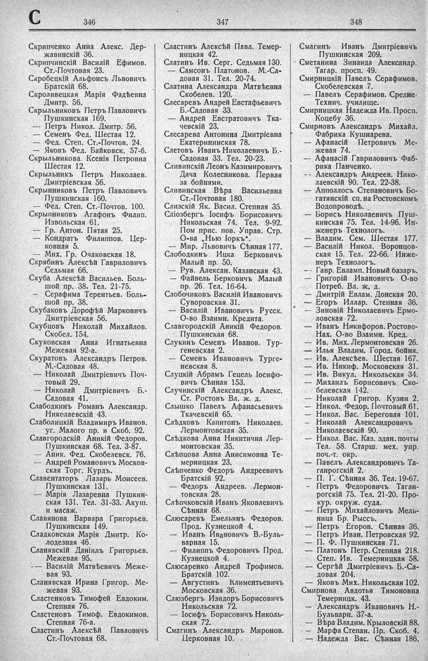

Лист источника 466
Скан

Распознанный текст
C 346
Скрипченко Анна Алекс. Дер-
жавинскій 36.
Скрипчинскій Василій Ефимов.
Ст.-Почтовая 23.
Скробецкій Альфонсъ Львовичъ
Братскій 68.
Скроливецкая Марія Фадѣевна
Дмитр. 56.
Скрыльниковъ Петръ Павловичъ
Пушкинская 169.
— Петръ Никол. Дмитр. 56.
— Семенъ Фед. Шестая 12.
— Фед. Степ. Ст.-Почтов. 24.
— Яковъ Фед. Байковск. 57-б.
Скрыльникова Ксенія Петровна
Шестая 12.
Скрыльникъ Петръ Николаев.
Дмитріевская 56.
Скрынниковъ Петръ Павловичъ
Пушкинская 160.
— Фед. Степ. Ст.-Почтов. 100.
Скрыпниковъ Агафонъ Филип.
Извольская 61.
— Гр. Антон. Пятая 25.
— Кондратъ Филиппов. Цер-
ковная 5.
— Мих. Гр. Очаковская 18.
Скрябинъ Алексѣй Гавриловичъ
Седьмая 66.
Скуба Алексѣй Васильев. Боль-
шой пр. 38. Тел. 21-75.
— Серафима Терентьев. Боль-
шой пр. 38.
Скубаковъ Дорофѣй Марковичъ
Дмитріевская 56.
Скубцовъ Николай Михайлов.
Скобел. 154.
Скуковская Анна Игнатьевна
Межевая 92-а.
Скуратовъ Александръ Петров.
М.-Садовая 48.
— Николай Дмитріевичъ Поч-
товый 29.
— Николай Дмитріевичъ Б.-
Садовая 41.
Слабодкинъ Романъ Александр.
Николаевскій 43.
Слаболицкій Владимиръ Иванов.
уг. Малого пр. и Скоб. 92.
Славгородскій Аникій Федоров.
Пушкинская 68. Тел. 3-87.
— Аник. Фед. Скобелевск. 76.
— Андрей Романовичъ Москов-
ская Торг. Курдъ.
Славентаторъ Лазарь Моисеев.
Пушкинская 131.
— Марія Лазаревна Пушкин-
ская 131. Тел. 31-33. Акуш.
и масаж.
Славянова Варвара Григорьев.
Пушкинская 149.
Сладковская Марія Дмитр. Ко-
лодезная 46.
Сланявскій Даніилъ Григорьев.
Межевая 95.
— Василій Матвѣевичъ Меже-
вая 93.
Сланявская Ирина Григор. Ме-
жевая 93.
Сластенковъ Тимофей Евдоким.
Степная 76.
Сластеновъ Тимоф. Евдокимов.
Степная 76-а.
Сластинъ Алексѣй Павловичъ
Ст.-Почтовая 68.
347
Сластинъ Алексѣй Павл. Темер-
ницкая 42.
Слатинъ Ив. Серг. Седьмая 130.
— Самсонъ Платонов. М.-Са-
довая 31. Тел. 20-74.
Слатина Александра Матвѣевна
Скобелев. 120.
Слесаревъ Андрей Евстафьевичъ
Б.-Садовая 33.
— Андрей Евстратовичъ Тка-
чевскій 23.
Слесарева Антонина Дмитріевна
Екатерининская 78.
Слетовъ Иванъ Николаевичъ Б.-
Садовая 33. Тел. 20-23.
Сливинскій Леонъ Казимировичъ
Дача Колесникова. Первая
за бойнями.
Сливинская Вѣра Васильевна
Ст.-Почтовая 180.
Слизскій Як. Васил. Степная 35.
Сліозбергъ Іосифъ Борисовичъ
Никольская 74. Тел. 9-92.
Пом прис. пов. Управ. Стр.
О-ва „Нью Іоркъ“.
— Мир. Львовичъ Сѣнная 177.
Слободкинъ Ицка Берковичъ
Малый пр. 50.
— Рув. Алексан. Казанская 43.
— Файвель Берковичъ Малый
пр. 26. Тел. 16-64.
Слобочиковъ Василій Ивановичъ
Суворовская 31.
— Василій Ивановичъ Русск.
О-во Взаимн. Кредита.
Славгородскій Аникій Федоров.
Пушкинская 68.
Слукинъ Семенъ Иванов. Тур-
геневская 2.
— Семенъ Ивановичъ Турге-
невская 8.
Слуцкій Абрамъ Гецель Іосифо-
вичъ Сѣнная 153.
Случинскій Александръ Алекс.
Ст. Ростовъ Вл. ж. д.
Слышко Павелъ Афанасьевичъ
Ткачевскій 65.
Слѣдковъ Капитонъ Николаев.
Лермонтовская 35.
Слѣдкова Анна Никитична Лер-
монтовская 35.
Слѣпцова Анна Анисимовна Те-
мерницкая 23.
Слѣпченко Федоръ Андреевичъ
Братскій 92.
— Федоръ Андреев. Лермон-
товская 28.
Слѣпчковскій Иванъ Яковлевичъ
Сѣнная 68.
Слюсаревъ Емельянъ Федоров.
Прод. Кузнецкой 4.
— Иванъ Ивановичъ В.-Буль-
варная 15.
— Филиппъ Федоровичъ Прод.
Кузнецкой 4.
Слюсаренко Андрей Трофимов.
Братскій 102.
— Августинъ Климентьевичъ
Московская 36.
Слюзбергъ Изидоръ Борисовичъ
Никольская 72.
— Іосифъ Борисовичъ Николь-
ская 72.
Смагинъ Александръ Миронов.
Церковная 10.
348
Смагинъ Иванъ Дмитріевичъ
Пушкинская 209.
Сметанина Зинаида Александр.
Тагар. просп. 49.
Смирницкій Павелъ Серафимов.
Скобелевская 7.
— Павелъ Серафимов. Средне-
Технич. училище.
Смирницкая Надежда Ив. Просп.
Коцебу 36.
Смирновъ Александръ Михайл.
Фабрика Кушнарева.
— Афанасій Петровичъ Ме-
жевая 74.
— Афанасій Гавриловичъ Фаб-
рика Панченко.
-- Александръ Андреев. Нико-
лаевскій 90. Тел. 22-38.
— Апполлосъ Степановичъ Бо-
гатянскій сп. на Ростовскомъ
Водопроводѣ.
— Борисъ Николаевичъ Пуш-
кинская 75. Тел. 14-96. Ин-
женеръ Технологъ.
— Владим. Сем. Шестая 177.
— Василій Никол. Воронцов-
ская 15. Тел. 22-66. Инже-
неръ Технологъ.
— Гавр. Евламп. Новый базарѣ.
— Григорій Ивановичъ О-во
Потреб. Вл. ж. д.
— Дмитрій Евлам. Донская 20.
— Егоръ Иллар. Степная 36.
— Зиновій Николаевичъ Ермо-
ловская 72.
— Иванъ Никифоров. Ростово-
Нах. О-во Взаимн. Кред.
— Ив. Мих. Лермонтовская 26.
— Илья Владим. Город. бойня.
— Ив. Алексѣев. Шестая 167.
— Ив. Никиф. Московская 31.
— Ив. Викул. Никольская 34.
— Михаилъ Борисовичъ Ско-
белевская 142.
— Николай Григор. Кузни 2.
— Никол. Федор. Почтовый 61.
— Никол. Вас. Береговая 101.
— Николай Александровичъ
Николаевскій 90.
— Никол. Вас. Каз. здан. почты
Тел. 58. Старш. мех. упр.
поч.-т. окр.
— Павелъ Александровичъ Та-
ганрогскій 2.
— П. Г. Сѣнная 36. Тел. 19-67.
— Петръ Федоровичъ Таган-
рогскій 75. Тел. 21-20. Про-
кур. окруж. суда.
— Петръ Михайловичъ Мель-
ница Бр. Рыссъ.
— Петръ Егоров. Сѣнная 36.
— Петръ Иван. Петровская 92.
— П. Ф. Пушкинская 71.
— Платонъ Петр. Степная 218.
— Степ. Ив. Темерницкая 58.
— Сергѣй Дмитріевичъ Б.-Са-
довая 204.
— Яковъ Мих. Никольская 102.
Смирнова Авдотья Тимоновна
Темерницк. 43.
— Александръ Ивановичъ Н.-
Бульварн. 37-а.
— Вѣра Владим. Крыловскій 88.
— Марфа Степан. Пр. Скоб. 4.
— Надежда Вас. Сѣнная 186.